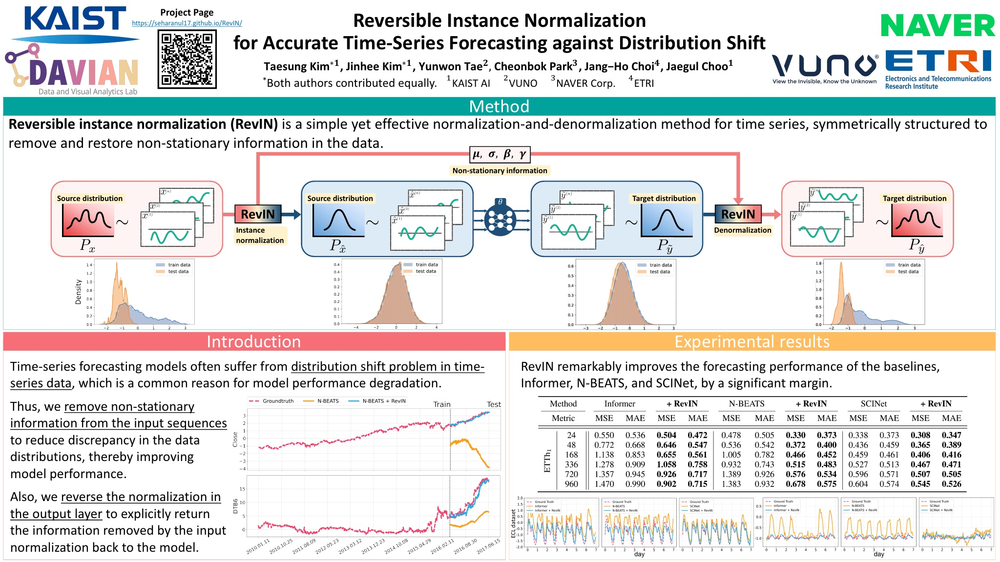
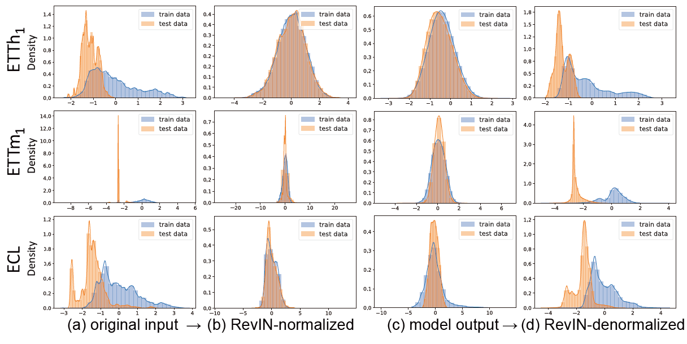
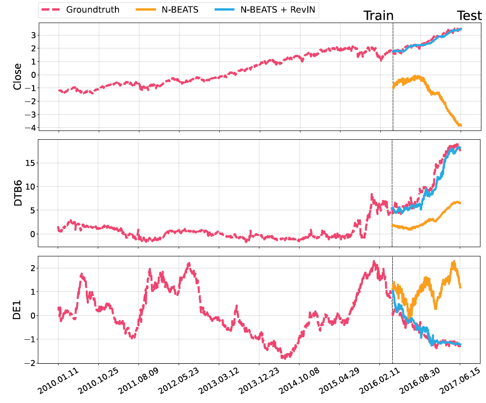

Poster


Statistical properties such as mean and variance often change over time in time series, i.e., time-series data suffer from a distribution shift problem. This change in temporal distribution is one of the main challenges that prevent accurate time-series forecasting. To address this issue, we propose a simple yet effective normalization method called reversible instance normalization (RevIN), a generally applicable normalization-and-denormalization method with learnable affine transformation. The proposed method is symmetrically structured to remove and restore the statistical information of a time-series instance, leading to significant performance improvements in time-series forecasting, as shown in Fig. 1. We demonstrate the effectiveness of RevIN via extensive quantitative and qualitative analyses on various real-world datasets, addressing the distribution shift problem.

RevIN can alleviate the distribution discrepancy problem by removing non-stationary information in the input layer and then restoring it in the output layer. The analysis is conducted on the ETT and ECL datasets using SCINet (Liu et al., 2021) as the baseline.

These are prediction results on three variables in the Nasdaq data, Close, DTB6, and DE1, to verify the effectiveness of RevIN on obvious non-stationary time series.

Additional multivariate time-series forecasting results.

@inproceedings{
kim2022reversible,
title={Reversible Instance Normalization for Accurate Time-Series Forecasting against Distribution Shift},
author={Taesung Kim and
Jinhee Kim and
Yunwon Tae and
Cheonbok Park and
Jang-Ho Choi and
Jaegul Choo},
booktitle={International Conference on Learning Representations},
year={2022},
url={https://openreview.net/forum?id=cGDAkQo1C0p}
}